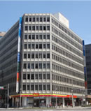

';
$header_obj->fncMenuHead_h1text = '日本ワーキング・ホリデー協会名古屋オフィスへのアクセス';
$header_obj->display_header();
include('../../calendar_module/mod_event_horizontal.php');
?>
';
$header_obj->fncMenuHead_h1text = '日本ワーキング・ホリデー協会名古屋オフィスへのアクセス';
$header_obj->display_header();
include('../../calendar_module/mod_event_horizontal.php');
?>
名古屋オフィスのご案内

名古屋オフィス
| 住所 | 名古屋セミナー会場：名古屋オフィスにて開催されます。 〒450-0002 名古屋市中村区名駅2-45-19 桑山ビル８階Ａ号室 |
|---|---|
| セミナー会場地図 |
mobilepage) { ?>
大きな地図で見る 大きな地図で見る |
| 最寄り駅 |
○ JR名古屋駅から徒歩５分 桜通口から名駅通りを名古屋ルーセントタワー方向に進んでください。 地下通路をご利用の場合は、１番または１０番出口がおすすめです。 旧名古屋中央郵便局（現在は名駅一丁目計画（仮称）により再開発中）の向かい側です。 より詳細なアクセス方法はこちらから mobilepage) { ?> 大きな地図で見る 大きな地図で見る 
【名古屋駅からの地下通路】 名古屋オフィスのビルは、地下通路でお越しいただくことも可能です。 １番出口「松岡ビル」を目指してきてください。 より詳細なアクセス方法はこちらから。 |
| 連絡先 | お問い合わせ 無料セミナーのご予約はこちらから |
| 営業時間 | OPEN 11:00 - CLOSE 19:00 名古屋オフィスは、土日、祝日も営業しております。 ※ご注意 個別でのカウンセリングをご希望の場合は、事前にご予約をお願い致します。 |
| カウンセラー紹介 |
|
| オフィスの様子 |   |
| 名古屋オフィスの雰囲気 |
オフィスは青いカーペットが敷き詰められ、ゆったりとした店内です。 まだまだ新しいオフィスですが、店内には膨大な情報量と海外留学経験がギュと詰まっており、プロジェクターで東京オフィスと連携しさまざまなセミナーを名古屋店内で体験していただくことが可能です。 はじめてご来店頂いたお客様でも、お帰りの際にはフレンドリーに話し合えることが多く、 名古屋オフィスはお客様とともに存在することを実感できます。 名古屋オフィス主催の「初めまして名古屋オフィスです」イベントには、新オフィスにも関わらず、これからご出発を予定された多くのお客様を初め、 日本に帰国されたワーホリ経験者の方々にたくさん参加していただいており、情報交換の場にもなっています。 一人でセミナーに参加されてもいつの間にか仲間ができている名古屋オフィスへ是非一度お越しください！ |